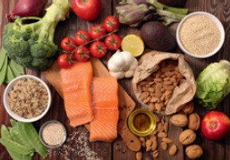

1g Fett liefert mehr als doppelt so viel Energie wie Kohlenhydrate und Eiweiß.
Nahrungsmittel setzen sich aus drei Hauptbestandteilen zusammen, die dem Körper jeweils eine bestimmte Energiemenge liefern.
| Kohlenhydrate (hierzu zählen auch alle Zucker) sind Energiequellen, sie sättigen und geben Kraft. | |
| Eiweiß benötigt der Körper als Aufbaustoff für Muskeln und das Immunsystem. | |
| Fett ist eine weitere Energiequelle. Als Baustoffe für den Körper sind ungesättigte Fettsäuren und pflanzliches Fett wichtig. | |
| Für eine gesunde Ernährung ist es deshalb wichtig, aus diesen drei Hauptnährstoffgruppen in einem ausgewogenen Mengenverhältnis Lebensmittel zu wählen. Aber denken Sie dran: 1g Fett liefert mehr als doppelt so viel Energie wie Kohlenhydrate und Eiweiß. |
|
| Drei Hauptmahlzeiten und zwei Zwischenmahlzeiten erhalten die Leistungsfähigkeit. Ein Imbiss am Nachmittag verhindert, dass Sie mit Heißhunger nach Hause zu kommen. | |
| Auf der Baustelle wird meistens Brot gegessen, häufig mit Obst und Gemüse. Ein warmes Abendessen kann dann ein gesunder Abschluss ein. |
 |